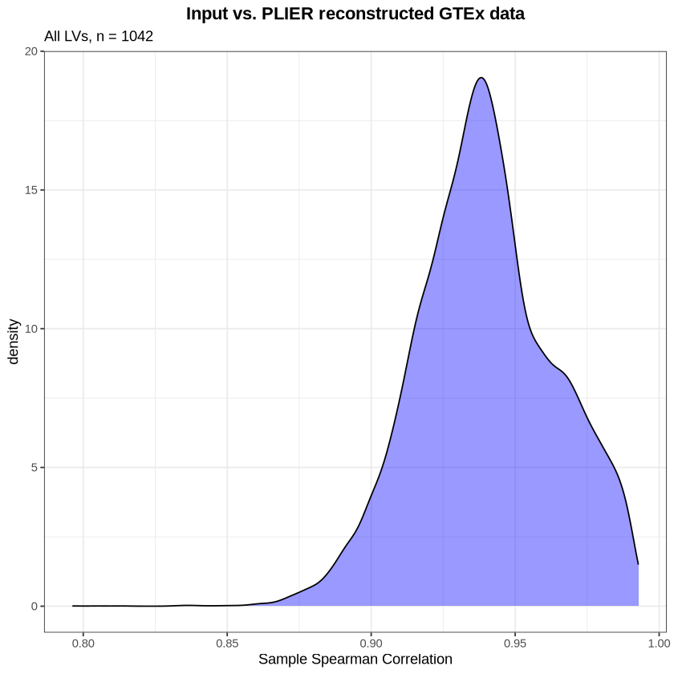

Code
INPUT_PLIER_MODEL_FILE = NULL Marc Subirana-Granés (2024)
Pathway Level Information ExtractoR (PLIER) (Mao, et al. bioRxiv. 2017.) is a framework that explicitly aligns latent variables (LVs) with prior knowledge in the form of (often curated) gene sets. Comparisons of PLIER to other methods (e.g., sparse PCA) and other evaluations can be found in the PLIER preprint.
We’re going to explore the GTEx dataset and the corresponding PLIER model.
Gene loadings (Z) or the latent space (B)
The Z matrix captures the association strength between each LV and the genes across the dataset. In essence, each column of Z corresponds to an LV, and each row to a gene. The value at a given position (i,j) within Z indicates the contribution or importance of gene i to LV j. High absolute values suggest a strong association between a gene and an LV, indicating that the gene’s expression patterns are significantly represented by that LV.
| GAS6 | 0.00000000 | 0.0000000 | 0.509601923 | 0.02303278 | 0.000000000 | 0.047740572 | 0.00000000 | 0.000000000 | 0.437047051 | 0.1329501 | ⋯ | 0.0000000 | 0.00000000 | 0.000000000 | 0.0000000 | 0.0000000 | 0.02756796 | 0 | 0.0464884923 | 0.00000000 | 0.37930827 |
| MMP14 | 0.00000000 | 0.0000000 | 0.000000000 | 0.08079764 | 0.000000000 | 0.000000000 | 0.00000000 | 0.000000000 | 0.628765339 | 0.0000000 | ⋯ | 0.0000000 | 0.05210891 | 0.060536933 | 0.0000000 | 0.0000000 | 0.00000000 | 0 | 0.0000000000 | 0.00000000 | 0.37263566 |
| MARCKSL1 | 0.02950483 | 0.0000000 | 0.005777573 | 0.00000000 | 0.000000000 | 0.059612700 | 0.00000000 | 0.000000000 | 0.004135659 | 0.0000000 | ⋯ | 0.1121266 | 0.00000000 | 0.000000000 | 0.0000000 | 0.0000000 | 0.01177523 | 0 | 0.0009735427 | 0.03060058 | 0.03408577 |
| SPARC | 0.00000000 | 0.0000000 | 0.000000000 | 0.03919136 | 0.000000000 | 0.000000000 | 0.00000000 | 0.040459910 | 0.277030056 | 0.3893688 | ⋯ | 0.0000000 | 0.00000000 | 0.000000000 | 0.0000000 | 0.0553349 | 0.26913268 | 0 | 0.0385386762 | 0.00000000 | 0.03187780 |
| CTSD | 0.00000000 | 0.1542023 | 0.688261428 | 0.08714279 | 0.000000000 | 0.008311279 | 0.00000000 | 0.167463435 | 1.852126115 | 0.1398464 | ⋯ | 0.0000000 | 0.05531637 | 0.004370088 | 0.0000000 | 0.0000000 | 0.00000000 | 0 | 0.0000000000 | 0.09982121 | 0.57563089 |
| EPAS1 | 0.00000000 | 0.0000000 | 0.000000000 | 0.00000000 | 0.008342559 | 0.035922995 | 0.05970857 | 0.008032573 | 0.178316151 | 0.0212524 | ⋯ | 0.0000000 | 0.00000000 | 0.000000000 | 0.0902047 | 0.4519502 | 0.00000000 | 0 | 0.0471251644 | 0.00000000 | 0.15490261 |
Matrix B represents the association LVs and the samples in the gene expression dataset.
| GTEX-1117F-0226-SM-5GZZ7 | GTEX-1117F-0426-SM-5EGHI | GTEX-1117F-0526-SM-5EGHJ | GTEX-1117F-0626-SM-5N9CS | GTEX-1117F-0726-SM-5GIEN | GTEX-1117F-1326-SM-5EGHH | GTEX-1117F-2426-SM-5EGGH | GTEX-1117F-2526-SM-5GZY6 | GTEX-1117F-2826-SM-5GZXL | GTEX-1117F-2926-SM-5GZYI | ⋯ | GTEX-ZZPU-1126-SM-5N9CW | GTEX-ZZPU-1226-SM-5N9CK | GTEX-ZZPU-1326-SM-5GZWS | GTEX-ZZPU-1426-SM-5GZZ6 | GTEX-ZZPU-1826-SM-5E43L | GTEX-ZZPU-2126-SM-5EGIU | GTEX-ZZPU-2226-SM-5EGIV | GTEX-ZZPU-2426-SM-5E44I | GTEX-ZZPU-2626-SM-5E45Y | GTEX-ZZPU-2726-SM-5NQ8O | |
|---|---|---|---|---|---|---|---|---|---|---|---|---|---|---|---|---|---|---|---|---|---|
| 1,IRIS_Neutrophil-Resting | 0.002535341 | -0.04370579 | 0.008896618 | -0.040861327 | 0.01004205 | -0.04501671 | -0.02085150 | 0.008406361 | -0.01470911 | 0.015219110 | ⋯ | 0.003852116 | -0.02826184 | -0.013730186 | 0.029131151 | 0.008022848 | 0.03222826 | 0.039309007 | -0.02315738 | 0.0309807534 | -0.062869901 |
| 2,IRIS_Neutrophil-Resting | -0.036216704 | -0.04205619 | 0.015346513 | -0.032393481 | -0.03428301 | -0.02622960 | -0.02392661 | -0.016633246 | -0.01347106 | -0.080844631 | ⋯ | -0.014479596 | 0.01169663 | 0.003722825 | -0.006459869 | 0.015024403 | -0.01393061 | 0.032931211 | -0.01396817 | -0.0127770805 | 0.004344517 |
| 3,REACTOME_TRANSMEMBRANE_TRANSPORT_OF_SMALL_MOLECULES | -0.049782191 | -0.02805278 | 0.056003293 | 0.072123311 | 0.05526153 | -0.05390967 | -0.01613316 | 0.007187259 | -0.04157486 | 0.004774956 | ⋯ | 0.012666339 | 0.00012085 | -0.065989568 | 0.034201192 | -0.032211689 | 0.04401801 | 0.001256358 | 0.15114167 | -0.0008082211 | 0.004330334 |
| 4,REACTOME_DNA_STRAND_ELONGATION | -0.070034949 | -0.03354618 | -0.105972428 | -0.108746841 | -0.04998180 | -0.10285130 | -0.07395319 | 0.099978788 | -0.03305152 | -0.068522377 | ⋯ | -0.034011051 | -0.05845505 | -0.063836002 | -0.021872189 | -0.085122302 | -0.01726072 | 0.369542669 | -0.13096173 | -0.0275255871 | -0.062070072 |
| 5,REACTOME_NEURONAL_SYSTEM | 0.050598296 | -0.01247532 | 0.030158286 | 0.001910724 | -0.02141408 | -0.01023089 | -0.02101647 | -0.009126819 | -0.01752155 | -0.028291885 | ⋯ | -0.035831201 | -0.05187064 | 0.020248505 | -0.002611368 | -0.019189933 | -0.04118643 | 0.012926796 | 0.03096042 | -0.0611740629 | 0.007897079 |
| 6,REACTOME_CELL_CYCLE_CHECKPOINTS | -0.076088528 | -0.05600864 | -0.114322889 | -0.011100703 | -0.06032094 | -0.06958746 | -0.02193094 | -0.057255665 | -0.03764977 | -0.021212990 | ⋯ | -0.042958319 | -0.01293398 | -0.064663867 | -0.025796319 | -0.027538524 | -0.11030715 | -0.031614062 | -0.03923539 | -0.0570118731 | -0.022636503 |
The matrix U links LVs, derived from gene expression data, to prior biological knowledge encapsulated in gene sets or pathways. Each element in U quantifies the association between a specific pathway and an LV.
| LV1 | LV2 | LV3 | LV4 | LV5 | LV6 | LV7 | LV8 | LV9 | LV10 | ⋯ | LV1033 | LV1034 | LV1035 | LV1036 | LV1037 | LV1038 | LV1039 | LV1040 | LV1041 | LV1042 | |
|---|---|---|---|---|---|---|---|---|---|---|---|---|---|---|---|---|---|---|---|---|---|
| IRIS_Bcell-Memory_IgG_IgA | 0 | 0 | 0 | 0.0000000 | 0 | 0 | 0 | 0 | 0 | 0 | ⋯ | 0 | 0 | 0 | 0 | 0 | 0 | 0 | 0 | 0 | 0 |
| IRIS_Bcell-Memory_IgM | 0 | 0 | 0 | 0.0000000 | 0 | 0 | 0 | 0 | 0 | 0 | ⋯ | 0 | 0 | 0 | 0 | 0 | 0 | 0 | 0 | 0 | 0 |
| IRIS_Bcell-naive | 0 | 0 | 0 | 0.0000000 | 0 | 0 | 0 | 0 | 0 | 0 | ⋯ | 0 | 0 | 0 | 0 | 0 | 0 | 0 | 0 | 0 | 0 |
| IRIS_CD4Tcell-N0 | 0 | 0 | 0 | 0.0000000 | 0 | 0 | 0 | 0 | 0 | 0 | ⋯ | 0 | 0 | 0 | 0 | 0 | 0 | 0 | 0 | 0 | 0 |
| IRIS_CD4Tcell-Th1-restimulated12hour | 0 | 0 | 0 | 0.0000000 | 0 | 0 | 0 | 0 | 0 | 0 | ⋯ | 0 | 0 | 0 | 0 | 0 | 0 | 0 | 0 | 0 | 0 |
| IRIS_CD4Tcell-Th1-restimulated48hour | 0 | 0 | 0 | 0.2299679 | 0 | 0 | 0 | 0 | 0 | 0 | ⋯ | 0 | 0 | 0 | 0 | 0 | 0 | 0 | 0 | 0 | 0 |
If the prior information coefficient matrix, U, has a low number of positive entries for each LV, biological interpretation should be more straightforward. This is one of the constraints in the PLIER model.
For each latent variable (i.e., not just those significantly associated with prior information), how many of the pathways/genesets have a positive entry?
num_lvs <- nrow(matrixB)
u_sparsity_all <- CalculateUSparsity(plier.results = gtex_plier_results,
significant.only = FALSE)
ggplot2::ggplot(as.data.frame(u_sparsity_all),
ggplot2::aes(x = u_sparsity_all)) +
ggplot2::geom_density(fill = "blue", alpha = 0.5) +
ggplot2::theme_bw() +
ggplot2::labs(x = "proportion of positive entries in U") +
ggplot2::ggtitle(paste("All LVs, n =", num_lvs))What proportion of entries in the U matrix for each LV are significantly associated with that LV?
u_sparsity_sig <- CalculateUSparsity(gtex_plier_results,
significant.only = TRUE,
fdr.cutoff = 0.05)
ggplot2::ggplot(as.data.frame(u_sparsity_sig),
ggplot2::aes(x = u_sparsity_sig)) +
ggplot2::geom_density(fill = "blue", alpha = 0.5) +
ggplot2::theme_bw() +
ggplot2::labs(x = "proportion of positive entries in U") +
ggplot2::ggtitle("Significant pathways only")What proportion of the pathways input into PLIER are significantly associated (FDR cutoff = 0.05) with LVs?
What proportion of the PLIER LVs have a gene set associated with them?
The “reconstructed” expression data comes form the producto of PLIER gene expression loadings(matrix Z) and latent variables (matrix B)
We reconstruct gene expression data from the gene loadings and LVs.
# TODO:input expression data from intermediate file
# Load GTEx data
gtex_expression_path=here::here('output/gtex/GTEx_v8_gene_median_tpm.rds')
gtex_expression_data <- readRDS(gtex_expression_path)
# Remove gene ens id column and duplicate genes
gtex_expression_data <- subset(gtex_expression_data, select = -c(gene_ens_id))
gtex_expression_data <- gtex_expression_data[!duplicated(gtex_expression_data["gene_symbol"]),]
# Rename rows with gene symbols
rownames(gtex_expression_data) <- gtex_expression_data[,"gene_symbol"]
# Remove gene symbol column
gtex_expression_data <- subset(gtex_expression_data, select = -c(gene_symbol))
# Remove NA
gtex_expression_data = na.omit(gtex_expression_data)
# Convert to matrix
gtex_expression_matrix <- as.matrix(gtex_expression_data)
# Z-score normalization
recount_input_exprs <- PLIER::rowNorm(gtex_expression_matrix)The reconstruction of the error is carried out using MASE (mean absolute scaled error) between the two gene expression matrices (before and after the reconstruction).
# reorder rows and columns equal
row_order <- rownames(recount_recon)
col_order <- colnames(recount_recon)
recount_input_exprs <- recount_input_exprs[row_order, col_order]
# calculate reconstruction error (per sample)
recon_error <- GetReconstructionMASE(true.mat = recount_input_exprs,
recon.mat = recount_recon)
# get number of LVs
num_lvs <- nrow(matrixB)# density plot
ggplot2::ggplot(as.data.frame(recon_error), ggplot2::aes(x = recon_error)) +
ggplot2::geom_density(fill = "blue", alpha = 0.4) +
ggplot2::theme_bw() +
ggplot2::labs(x = "Sample MASE",
title = "Input vs. PLIER reconstructed GTEx data",
subtitle = paste("All LVs, n =", num_lvs)) +
ggplot2::theme(plot.title = ggplot2::element_text(hjust = 0.5, face = "bold"))If correlation between the input and the reconstructed data is high, that suggests that reconstruction is “successful.” Given the different constraints in PLIER, we would not expect to perfectly (rho = 1) reconstruct the input data. This particular evaluation will be most useful when we look at applying a trained PLIER model to a test dataset.
# calculate correlation
recon_cor <- GetReconstructionCorrelation(true.mat = recount_input_exprs,
recon.mat = recount_recon)
# density plot
ggplot2::ggplot(as.data.frame(recon_cor), ggplot2::aes(x = recon_cor)) +
ggplot2::geom_density(fill = "blue", alpha = 0.4) +
ggplot2::theme_bw() +
ggplot2::labs(x = "Sample Spearman Correlation",
title = "Input vs. PLIER reconstructed GTEx data",
subtitle = paste("All LVs, n =", num_lvs)) +
ggplot2::theme(plot.title = ggplot2::element_text(hjust = 0.5, face = "bold"))
We expect that samples that are highly correlated pre- and post-PLIER should have low MASE.